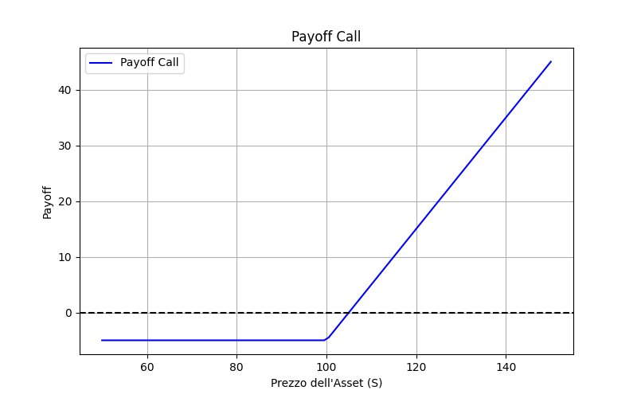

Opzioni Finanziarie: Introduzione e Strategie
Le opzioni finanziarie sono strumenti derivati che permettono di...
Esempio di Grafico
Scopri come usare le opzioni nel trading e nella gestione del rischio.
Le opzioni finanziarie sono strumenti derivati che permettono di...
Scopri come usare le opzioni nel trading e nella gestione del rischio.